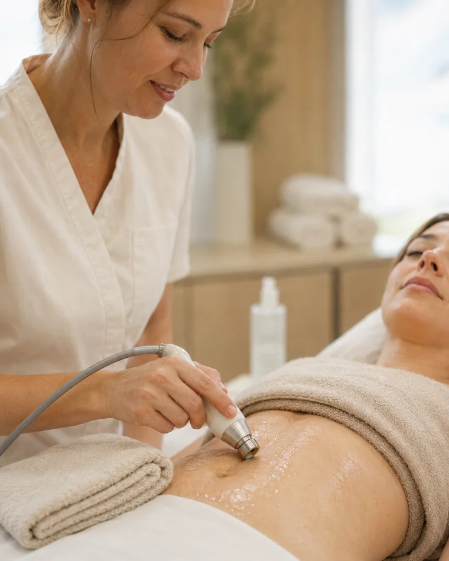

Fizykoterapia estetyczna
W służbie pięknaFizykoterapia estetyczna to relatywnie młody, choć dynamicznie rozwijający się dział fizjoterapii, którego celem jest wsparcie pacjentów w dążeniu do szczupłej, jędrnej sylwetki oraz zdrowej i młodo wyglądającej skóry. Fizjoterapeuci wykorzystują dobrze im znane metody i techniki fizjoterapii, ale pracują na zupełnie inny efekt – młody i piękny wygląd w zdrowym ciele.
- Zabieg pojedynczy5–20 minod 30 zł
Przebieg, wskazania i zalecenia
Rodzaj terapii i częstotliwość zabiegów dobierane są indywidualnie po wcześniejszej konsultacji z fizjoterapeutą i omówieniu oczekiwań pacjenta. W fizykoterapii estetycznej dążymy do poprawienia jakości i struktury skóry, ujednolicenia kolorytu, odzyskania promiennego, świeżego wyglądu, pozbycia się nadmiaru tkanki tłuszczowej, redukcji cellulitu, wyrównaniu wszelkich nierówności.
Zabiegi z zakresu fizykoterapii estetycznej mogą być wsparciem przy zabiegach medycyny estetycznej i chirurgii plastycznej (np. w przypadku pacjentów po liposukcji).
Fala radiowa (RF) wykorzystywana w fizjoterapii do głębokiej stymulacji tkanek, w zakresie estetyki ciała przynosi bardzo dobre efekty w redukcji tkanki tłuszczowej i cellulitu. Ciepło wytwarzane przy zabiegu fali radiowej rozbija komórki tłuszczowe, inicjując proces lipolizy. Rozpuszczone komórki tłuszczowe przedostają się do krwiobiegu oraz do układu limfatycznego, a stamtąd trafiają do wątroby, gdzie zostają wydalone przez nerki i układ trawienny. Fala radiowa wpływa także na poprawę jakości i kondycji skóry. Stymuluje fibroblasty do produkcji kolagenu i elastyny, dając efekt natychmiastowego lifting zwiotczałych obszarów.
W fizjoterapii, terapia ultradźwiękami, w której wykorzystuje się falą ultradźwiękową o wysokich częstotliwościach, stosowana jest w celu zmniejszenia dolegliwości bólowych, łagodzenia stanów zapalnych, przyspieszenia gojenia ran. Z kolei pod kątem naszego wyglądu, ultradźwięki działają ujędrniająco na skórę, napinają ją, poprawiają jej gęstość i elastyczność.
Tens, czyli przezskórna elektryczna stymulacja nerwów to metoda elektrostymulacji wykorzystująca prąd impulsowy o niskiej częstotliwości. W medycynie estetycznej wykorzystywane do wzmocnienia i regeneracji mięśni twarzy i ciała. Elektroterapia Tens poprawia napięcie skóry, wygładza zmarszczki, modeluje i naturalnie rzeźbi ciało.
Elektrostymulacja mięśni to metoda oparta na dostarczaniu do mięśni odpowiednio dopasowanych impulsów elektrycznych. Ich intensywność i częstotliwość ustawia się tak, by sygnał elektryczny naśladował naturalne sygnały pochodzące z układu nerwowego. Dzięki temu w mięśniach powstają dodatkowe skurcze, które w połączeniu z aktywnością fizyczną prowadzą do zwiększenia efektywności treningu, poprawienia ukrwienia tkanek, polepszenia metabolizmu i spalania tkanki tłuszczowej. EMS skutecznie modeluje i rzeźbi sylwetkę, wzmacnia gorset mięśniowy, poprawia jędrność i elastyczność skóry.
Laser emituje skoncentrowaną wiązkę światła o parametrach biostymulujących. Terapia przyśpiesza przemianę materii oraz stymuluje komórki skóry do produkcji włókien kolagenu i elastyny. Dodatkowo, poprawia krążenie krwi i pomaga w szybszym odprowadzaniu szkodliwych produktów. Skóra po laseroterapii wygląda zdrowo i młodo. Poprawia się jej gęstość, jędrność i elastyczność, zyskuje ujednolicony koloryt oraz gładką strukturę.
Krioterapia, czyli leczenie zimnem to naturalny i skuteczny sposób na pozbycie się uporczywej tkanki tłuszczowej, cellulitu czy obwisłej skóry. Efektem działania krioterapii jest gwałtowne obkurczenie naczyń krwionośnych i tkanek. Na dalszym etapie naczynia ulegają szybkiemu rozszerzeniu i krew zaczyna krążyć szybciej. Krioterapia poprawia mikrokrążenie, skóra jest dotleniona, ujędrniona, ma zdrowszy i piękniejszy wygląd. Krioterapia ogólnoustrojowa to terapia w kriokomorze (temp. od -130 do -160 st. C.) i polecana jest osobom dbającym o kondycję całego organizmu, chcącym opóźnić proces starzenia się, wyszczuplić sylwetkę, zredukować cellulit, poprawić jędrność i sprężystość skóry. W krioterapii miejscowej z kolei stosuje się urządzenie wytwarzające ciekłą parę ciekłego azotu (temp. ok. 100 st. C.) i opracowuje poszczególne części ciała, np. dotknięte cellulitem.
Sekwencyjny masaż uciskowy ma pozytywny wpływ na organizm człowieka. W medycynie estetycznej wykorzystywany do walki z nadmierną tkanką tłuszczową, miejscowymi złogami tłuszczu oraz z cellulitem. Pobudza przepływ limfy, zmniejsza obrzęki. Zalecany pacjentom po liposukcji.
Wskazania
- Szara, ziemista skóra.
- Utrata jędrności i elastyczni skóry.
- Wiotka skóra.
- Utrata owalu twarzy.
- Drugi podbródek.
- Zmarszczki.
- Blizny.
- Nadmiar, zlokalizowanej miejscowo tkanki tłuszczowej.
- Cellulit.
- Opuchnięcia, obrzęki.
- Zespół ciężkich nóg.
Efekty
- redukcja tkanki tłuszczowej
- redukcja cellulitu
- ujędrnienie i zagęszczenie skóry
- poprawa jędrności, naturalny lifting
- stymulacja produkcji włókien kolagenu i elastyny
- poprawa krążenia
- zmniejszenie obrzęków
- likwidacja zespołu ciężkich nóg
- detoksykacja
Zalecenia przed zabiegiem
- Zabiegi nie wymagają specjalnego przygotowania.
Zalecenia po zabiegu
- Zabiegi nie wymagają okresu rekonwalescencji.
- Bezpośrednio po terapii można wrócić do codziennych aktywności.
Przeciwwskania
- Ciąża.
- Miesiączka.
- Choroby autoimmulogiczne.
- Zaburzenia krążenia tętniczego.
- Miażdżyca zarostowa tętnic.
- Zaburzenia czucia.
- Ostre zapalenia, gruźlica płuc, rozstrzeń oskrzeli, gorączka.
- Zaburzenia krzepnięcia krwi.
- Zakrzepowe zapalenie żył.
- Nowotwory.
- Rozrusznik serca.
- Padaczka.
- Cukrzyca.